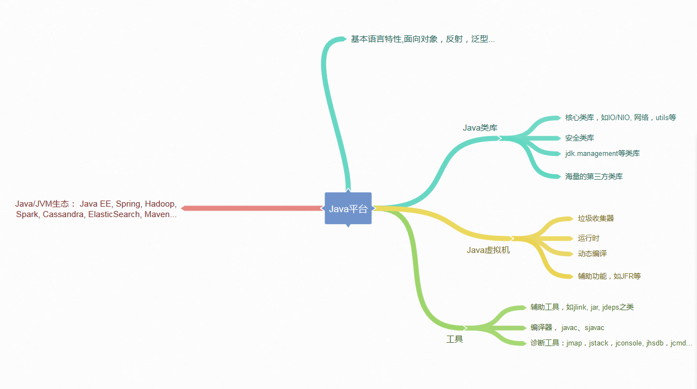

- 00 开篇词 以面试题为切入点，有效提升你的Java内功-极客时间.md
- 01 谈谈你对Java平台的理解？.md
- 02 Exception和Error有什么区别？-极客时间.md
- 03 谈谈final、finally、 finalize有什么不同？-极客时间.md
- 04 强引用、软引用、弱引用、幻象引用有什么区别？-极客时间.md
- 05 String、StringBuffer、StringBuilder有什么区别？-极客时间.md
- 06 动态代理是基于什么原理？-极客时间.md
- 07 int和Integer有什么区别？-极客时间.md
- 08 对比Vector、ArrayList、LinkedList有何区别？-极客时间.md
- 09 对比Hashtable、HashMap、TreeMap有什么不同？-极客时间.md
- 10 如何保证集合是线程安全的 ConcurrentHashMap如何实现高效地线程安全？-极客时间.md
- 11 Java提供了哪些IO方式？ NIO如何实现多路复用？-极客时间.md
- 12 Java有几种文件拷贝方式？哪一种最高效？-极客时间.md
- 13 谈谈接口和抽象类有什么区别？-极客时间.md
- 14 谈谈你知道的设计模式？-极客时间.md
- 15 synchronized和ReentrantLock有什么区别呢？-极客时间.md
- 16 synchronized底层如何实现？什么是锁的升级、降级？-极客时间.md
- 17 一个线程两次调用start()方法会出现什么情况？-极客时间.md
- 18 什么情况下Java程序会产生死锁？如何定位、修复？-极客时间.md
- 19 Java并发包提供了哪些并发工具类？-极客时间.md
- 20 并发包中的ConcurrentLinkedQueue和LinkedBlockingQueue有什么区别？-极客时间.md
- 21 Java并发类库提供的线程池有哪几种？ 分别有什么特点？-极客时间.md
- 22 AtomicInteger底层实现原理是什么？如何在自己的产品代码中应用CAS操作？-极客时间.md
- 23 请介绍类加载过程，什么是双亲委派模型？-极客时间.md
- 24 有哪些方法可以在运行时动态生成一个Java类？-极客时间.md
- 25 谈谈JVM内存区域的划分，哪些区域可能发生OutOfMemoryError-极客时间.md
- 26 如何监控和诊断JVM堆内和堆外内存使用？-极客时间.md
- 27 Java常见的垃圾收集器有哪些？-极客时间.md
- 28 谈谈你的GC调优思路-极客时间.md
- 29 Java内存模型中的happen-before是什么？-极客时间.md
- 30 Java程序运行在Docker等容器环境有哪些新问题？-极客时间.md
- 31 你了解Java应用开发中的注入攻击吗？-极客时间.md
- 32 如何写出安全的Java代码？-极客时间.md
- 33 后台服务出现明显“变慢”，谈谈你的诊断思路？-极客时间.md
- 34 有人说“Lambda能让Java程序慢30倍”，你怎么看？-极客时间.md
- 35 JVM优化Java代码时都做了什么？-极客时间.md
- 36 谈谈MySQL支持的事务隔离级别，以及悲观锁和乐观锁的原理和应用场景？-极客时间.md
- 37 谈谈Spring Bean的生命周期和作用域？-极客时间.md
- 38 对比Java标准NIO类库，你知道Netty是如何实现更高性能的吗？-极客时间.md
- 39 谈谈常用的分布式ID的设计方案？Snowflake是否受冬令时切换影响？-极客时间.md
- 周末福利 一份Java工程师必读书单-极客时间.md
- 周末福利 谈谈我对Java学习和面试的看法-极客时间.md
- 结束语 技术没有终点-极客时间.md
01 谈谈你对Java平台的理解？
从你接触 Java 开发到现在，你对 Java 最直观的印象是什么呢？是它宣传的 “Write once, run anywhere”，还是目前看已经有些过于形式主义的语法呢？你对于 Java 平台到底了解到什么程度？请你先停下来总结思考一下。
今天我要问你的问题是，谈谈你对 Java 平台的理解？“Java 是解释执行”，这句话正确吗？
典型回答
Java 本身是一种面向对象的语言，最显著的特性有两个方面，一是所谓的“书写一次，到处运行”（Write once, run anywhere），能够非常容易地获得跨平台能力；另外就是垃圾收集（GC, Garbage Collection），Java 通过垃圾收集器（Garbage Collector）回收分配内存，大部分情况下，程序员不需要自己操心内存的分配和回收。
我们日常会接触到 JRE（Java Runtime Environment）或者 JDK（Java Development Kit）。 JRE，也就是 Java 运行环境，包含了 JVM 和 Java 类库，以及一些模块等。而 JDK 可以看作是 JRE 的一个超集，提供了更多工具，比如编译器、各种诊断工具等。
对于“Java 是解释执行”这句话，这个说法不太准确。我们开发的 Java 的源代码，首先通过 Javac 编译成为字节码（bytecode），然后，在运行时，通过 Java 虚拟机（JVM）内嵌的解释器将字节码转换成为最终的机器码。但是常见的 JVM，比如我们大多数情况使用的 Oracle JDK 提供的 Hotspot JVM，都提供了 JIT（Just-In-Time）编译器，也就是通常所说的动态编译器，JIT 能够在运行时将热点代码编译成机器码，这种情况下部分热点代码就属于编译执行，而不是解释执行了。
考点分析
其实这个问题，问得有点笼统。题目本身是非常开放的，往往考察的是多个方面，比如，基础知识理解是否很清楚；是否掌握 Java 平台主要模块和运行原理等。很多面试者会在这种问题上吃亏，稍微紧张了一下，不知道从何说起，就给出个很简略的回答。
对于这类笼统的问题，你需要尽量表现出自己的思维深入并系统化，Java 知识理解得也比较全面，一定要避免让面试官觉得你是个“知其然不知其所以然”的人。毕竟明白基本组成和机制，是日常工作中进行问题诊断或者性能调优等很多事情的基础，相信没有招聘方会不喜欢“热爱学习和思考”的面试者。
即使感觉自己的回答不是非常完善，也不用担心。我个人觉得这种笼统的问题，有时候回答得稍微片面也很正常，大多数有经验的面试官，不会因为一道题就对面试者轻易地下结论。通常会尽量引导面试者，把他的真实水平展现出来，这种问题就是做个开场热身，面试官经常会根据你的回答扩展相关问题。
知识扩展
回归正题，对于 Java 平台的理解，可以从很多方面简明扼要地谈一下，例如：Java 语言特性，包括泛型、Lambda 等语言特性；基础类库，包括集合、IO/NIO、网络、并发、安全等基础类库。对于我们日常工作应用较多的类库，面试前可以系统化总结一下，有助于临场发挥。
或者谈谈 JVM 的一些基础概念和机制，比如 Java 的类加载机制，常用版本 JDK（如 JDK 8）内嵌的 Class-Loader，例如 Bootstrap、 Application 和 Extension Class-loader；类加载大致过程：加载、验证、链接、初始化（这里参考了周志明的《深入理解 Java 虚拟机》，非常棒的 JVM 上手书籍）；自定义 Class-Loader 等。还有垃圾收集的基本原理，最常见的垃圾收集器，如 SerialGC、Parallel GC、 CMS、 G1 等，对于适用于什么样的工作负载最好也心里有数。这些都是可以扩展开的领域，我会在后面的专栏对此进行更系统的介绍。
当然还有 JDK 包含哪些工具或者 Java 领域内其他工具等，如编译器、运行时环境、安全工具、诊断和监控工具等。这些基本工具是日常工作效率的保证，对于我们工作在其他语言平台上，同样有所帮助，很多都是触类旁通的。
下图是我总结的一个相对宽泛的蓝图供你参考。

不再扩展了，回到前面问到的解释执行和编译执行的问题。有些面试官喜欢在特定问题上“刨根问底儿”，因为这是进一步了解面试者对知识掌握程度的有效方法，我稍微深入探讨一下。
众所周知，我们通常把 Java 分为编译期和运行时。这里说的 Java 的编译和 C/C++ 是有着不同的意义的，Javac 的编译，编译 Java 源码生成“.class”文件里面实际是字节码，而不是可以直接执行的机器码。Java 通过字节码和 Java 虚拟机（JVM）这种跨平台的抽象，屏蔽了操作系统和硬件的细节，这也是实现“一次编译，到处执行”的基础。
在运行时，JVM 会通过类加载器（Class-Loader）加载字节码，解释或者编译执行。就像我前面提到的，主流 Java 版本中，如 JDK 8 实际是解释和编译混合的一种模式，即所谓的混合模式（-Xmixed）。通常运行在 server 模式的 JVM，会进行上万次调用以收集足够的信息进行高效的编译，client 模式这个门限是 1500 次。Oracle Hotspot JVM 内置了两个不同的 JIT compiler，C1 对应前面说的 client 模式，适用于对于启动速度敏感的应用，比如普通 Java 桌面应用；C2 对应 server 模式，它的优化是为长时间运行的服务器端应用设计的。默认是采用所谓的分层编译（TieredCompilation）。这里不再展开更多 JIT 的细节，没必要一下子就钻进去，我会在后面介绍分层编译的内容。
Java 虚拟机启动时，可以指定不同的参数对运行模式进行选择。 比如，指定“-Xint”，就是告诉 JVM 只进行解释执行，不对代码进行编译，这种模式抛弃了 JIT 可能带来的性能优势。毕竟解释器（interpreter）是逐条读入，逐条解释运行的。与其相对应的，还有一个“-Xcomp”参数，这是告诉 JVM 关闭解释器，不要进行解释执行，或者叫作最大优化级别。那你可能会问这种模式是不是最高效啊？简单说，还真未必。“-Xcomp”会导致 JVM 启动变慢非常多，同时有些 JIT 编译器优化方式，比如分支预测，如果不进行 profiling，往往并不能进行有效优化。
除了我们日常最常见的 Java 使用模式，其实还有一种新的编译方式，即所谓的 AOT（Ahead-of-Time Compilation），直接将字节码编译成机器代码，这样就避免了 JIT 预热等各方面的开销，比如 Oracle JDK 9 就引入了实验性的 AOT 特性，并且增加了新的 jaotc 工具。利用下面的命令把某个类或者某个模块编译成为 AOT 库。
jaotc --output libHelloWorld.so HelloWorld.class
jaotc --output libjava.base.so --module java.base
然后，在启动时直接指定就可以了。
java -XX:AOTLibrary=./libHelloWorld.so,./libjava.base.so HelloWorld
而且，Oracle JDK 支持分层编译和 AOT 协作使用，这两者并不是二选一的关系。如果你有兴趣，可以参考相关文档：http://openjdk.java.net/jeps/295。AOT 也不仅仅是只有这一种方式，业界早就有第三方工具（如 GCJ、Excelsior JET）提供相关功能。
另外，JVM 作为一个强大的平台，不仅仅只有 Java 语言可以运行在 JVM 上，本质上合规的字节码都可以运行，Java 语言自身也为此提供了便利，我们可以看到类似 Clojure、Scala、Groovy、JRuby、Jython 等大量 JVM 语言，活跃在不同的场景。
今天，我简单介绍了一下 Java 平台相关的一些内容，目的是提纲挈领地构建一个整体的印象，包括 Java 语言特性、 核心类库与常用第三方类库、Java 虚拟机基本原理和相关工具，希望对你有所帮助。
一课一练
关于今天我们讨论的题目你做到心中有数了吗？知道不如做到，请你也在留言区写写自己对 Java 平台的理解。我会选出经过认真思考的留言，送给你一份学习鼓励金，欢迎你与我一起讨论。
你的朋友是不是也在准备面试呢？你可以“请朋友读”，把今天的题目分享给好友，或许你能帮到他。
© 2019 - 2023 Liangliang Lee. Powered by gin and hexo-theme-book.